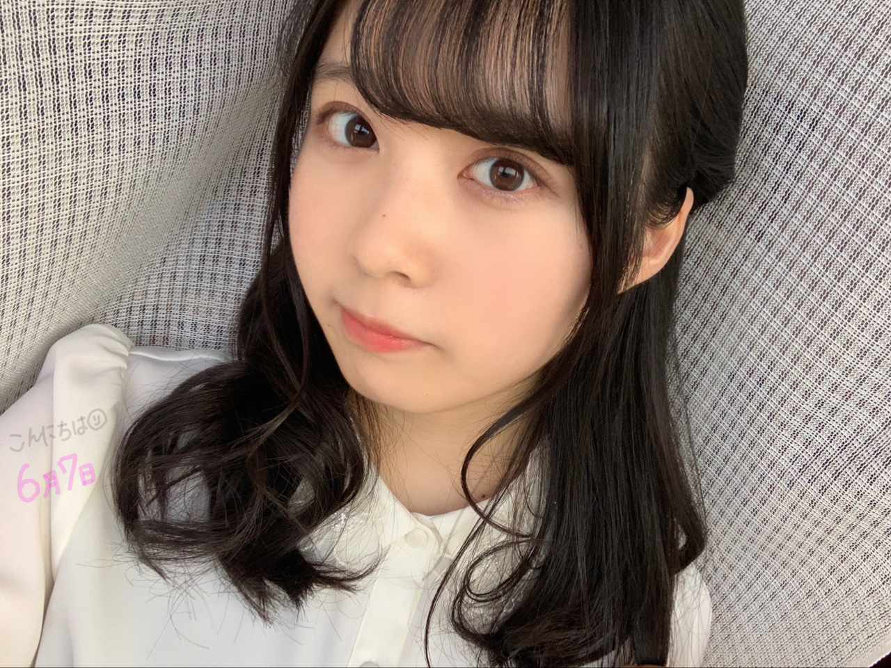
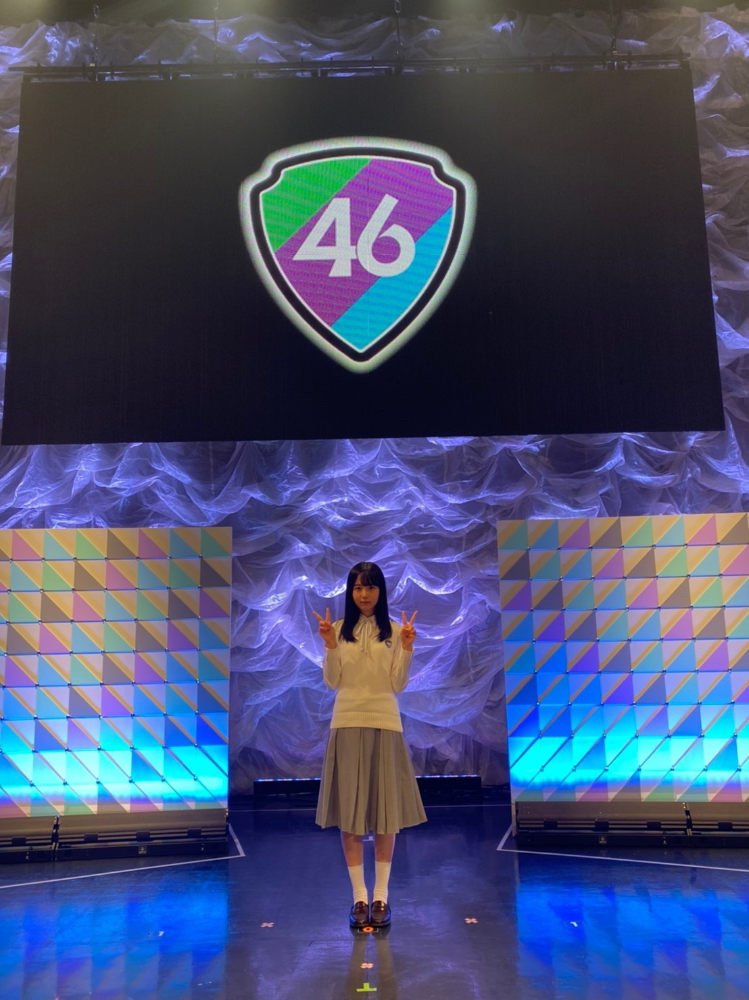

2020/0610Wed試行錯誤中！弓木奈於
ページをクリックしてくださりありがとうございます✨
乃木坂46 新4期生
京都府出身
弓木奈於（ゆみきなお）です☺︎

携帯を置いて、タイマー設定で写真を撮りました！
以前も挑戦したのですが、
その時は時間がなくて、一枚しか撮れない！という時だったのです。
（今思えば、何でそんな時に挑戦したのでしょうか...笑）
しかし！
7秒タイマーにしたつもりが3秒タイマーで、
画面『3』
私『3秒！？』
画面『2』
私『ポーズを決めねば！！！』
画面『1』
私『決めねば...！』
と慌ててしまったのです！
¯\( ˘-˘ )/¯ ｱﾘｬ
今日は間違えなかったですよ！！
でも何故か、思いがけぬタイミングでパシャっとなった写真がありました...

撮った写真見ようと思ってカメラロールを開いたら、一番最初にこの写真があったのです！
これいつ撮ったんだろう...？
ボタン押したのかな...？
写真があるってことは、押したんだろうな...笑
一番最初に撮ったからか、正座をしているのです（笑）
タイマー設定で写真を撮ると、次手で持っで写真を撮る時にもタイマーになっている時ありませんか...？
アルアル！
---------- ｷﾘｶｴ ---------
❁質問にお返事させていただくコーナーmini❁
⚫︎最近はまっていることとかある？
プチトマトにはまってます！
⚫︎ 奈於ちゃんは何パスタが好きですか?
ペスカトーレが好きです！
⚫︎ 活動自粛中何か新たな発見をしましたか？
物置部屋の掃除をしていて、振動するプレートを見つけました！
昔家族で回していた交換日記も見つけました！☺︎
⚫︎ 最近は他に何か料理したーー？？
ジェノベーゼソースを作りました！
ソースと海老と糖質ゼロ麺でなんちゃってジェノベーゼパスタを作ったり、
たことブロッコリーと混ぜたり、アレンジがたくさんあるので大好きです☺︎
料理と言っていいのかわからないのですが...
アボカド納豆はおすすめです！
納豆に切ったアボカド、海苔を混ぜるだけ！
璃果ちゃんも気に入ってくれました☺️
海苔は韓国海苔でも美味しいです( '-' )ง✧
⚫︎ ハンドクリームはどんなの使ってますか？
Aesopのレスレクション ハンドバームです！
お誕生日にいただいて、大切に使っております！
香りにも癒されます...❁
⚫︎バスケしてる闘牛ってどんなイメージ？
足が速くて、強くて、バスケに対して一生懸命な方だと想像しました！
⚫︎ メガネとコンタクトどっち派？
メガネ目が小さくなっちゃうし、極力コンタクトか何もしないにしていたのですが...
最近はちゃんとメガネかけないとなって思ってかけてます！
メガネかけないと見えないので！笑
初公開

⚫︎ 水泳はどのくらいやってたんですか？
3歳〜11歳までやっていました！
今日は以前いただいていた質問に少しお返事させていただきました(*ˊᵕˋ*)♡
以前いただいたコメントも大切に読ませていただいております！
ありがとうございます( *ˊᵕˋ ) ⁾⁾
---------- ｷﾘｶｴ ---------
乃木坂46時間TVの企画が追加発表されましたね ∗•*¨*⸜(´ ˘ `∗)⸝*¨*•∗
4期生の企画は...お菓子の家を作ります！
夢のような企画をさせていただける事、とってもとても幸せです(*ˊᵕˋ*) ❤︎
お菓子作りが上手なメンバーや、甘いものが大好きなメンバーがたくさんいるので、
皆さんと楽しく作りたいなって思います(* ॑ ॑* )⸝♪
そして見てくださる皆さんに楽しんでいただけるように、一生懸命頑張ります！！
1期生さん、2期生さん、3期生さん、先輩方の企画もとっても楽しみです✨
幸せです！ワクワクです！˙˚⸜(* ॑ ॑* )⸝˚˙
---------- ｷﾘｶｴ ---------
私のほっぺたが赤いのは、昔からだったみたいです(●･̆⍛･̆●)

明日は黒見ちゃんです！
私は、黒見ちゃんとお出かけしたいな...って密かに思っています( ⸝⸝⸝˙~˙⸝⸝⸝ )
黒見ちゃんも美佑ちゃんもお顔が整っているから、色々なヘアアレンジがすっごく似合いますね☺︎
今日のブログは長くならないように心がけました|•'-'•)و✧
お仕事や学校、皆さん毎日本当にお疲れ様です✨
次のブログでお話ししたいこと、もうあるのですっ ﾋﾟｮﾝ⋆⸜(* ॑ ॑* )⸝ﾋﾟｮﾝ

昔から仲良しな友達が、「最近お姉さんみたいな顔になってきたね！」って言ってくれました☺️✨
頑張らないとっ！
最後まで読んでくださりありがとうございました☺️
皆さんにとって、素敵な1週間になりますように...♡
本日もありがとうございました✨
2020/0609Tue太陽が眩しすぎる。松尾美佑
日が延びました。
夕方にベランダに出たら大きな虫さんと目が合いました( Ꙭ)
え、めっちゃこっちみてる。
そーっと、衝突しないように、
バレないように、
横を通ろうとしたら
バレました。
こちらに向かって猛スピードで近づいてきます。
大変だ。このままではぶつかってしまう。
大きな声を出しながらベランダを走り回っていたら
キッチンにいた母が様子を見に来ました。
恥ずかしかったです。
もうお会いする事は無いと思っていたら、
次の日もベランダで虫さんがお出迎えしてくれました。
わーーーーーーーー！！！！！！
千葉県出身、高校2年16歳の
松尾美佑(まつおみゆ)です。
よろしくお願い致します。

【風がっ】
前回のブログでの
いつのか分かりますか？の写真、
正解は〜
5/25のブログのショートカットでも出来るヘアアレンジ！両サイド編み込みでした！
答えて下さってありがとうございました！
難問でした？
何の話？と思われた方へ、
もし良ければ飛んでください♀️
前回(質問の日)http://dlvr.it/RXynkt
5/25 (答えの日)http://dlvr.it/RXJTZc

【強かったっ】
乃木坂46時間TVの企画が追加発表されました！
4期生の期別企画では、
みんなでお菓子のお家を作ります！
凄くないですか？？？
夢ですよ夢。
絶対1回は夢に想った事がある方が世界中に沢山いらっしゃると思います。
ありますよね？
絶対ありますよね。
本っ当に楽しみです！⸜❤︎⸝
楽しさを沢山の方と共有出来るように、
見て下さる方にも楽しさや笑顔をたくさん届けられるように、
精一杯頑張ります！
よろしくお願い致します☺︎

【ありがとう^^】
絵が上手過ぎるお友達が描いてくれました！
新4期生で週刊プレイボーイさんに載せて頂いた時の制服バージョンと
坂道研修生の制服バージョンの絵を描いてくれました(*ˊᵕˋ*)
"みゆりん"というあだ名を付けてくれた子です☺︎
今日の増本綺良ちゃんのブログに載っているイラストも描いてくれました！
凄く可愛く描いてくれました。
嬉しいです¨̮
ありがとう⸜❤︎⸝
少し前のお話。
人狼で人狼になりました。
初めて勝ちました！！！！
私が人狼だとバレそうになった時、凄く味方をしてくれた綺良ちゃん。
綺良ちゃんが狂人なのかな？
と思っていたら、
狂人は瑠奈ちゃんでした。
瑠奈ちゃんは1日目に殺されていました。
綺良ちゃんはただ私を村人だと思って信じてくれていたそうです。
可愛いです。
お返事のコーナー¨̮
✽もうサイン考えた？
楽しみにしててください！
✽中学生の時のスタンツのポジションはトップだった？
トップから背が伸びてスポットになりました！
✽夏がはじまりましたが、美佑ちゃんは夏の始まりに聞きたくなる曲はありますか？
SHISHAMOさんの
『君と夏フェス』です！
今朝も聞きました！
✽ 今月誕生日なので祝ってください！
6月お誕生日の方、
おめでとうございます！！！
昨日は筒井あやめちゃんのお誕生日でした！
あやめちゃん、16歳おめでとうございます！
笑顔いっぱいの1年になりますように☺︎
明日は〜
なお〜〜〜〜〜〜〜〜〜
普通になおちゃんって呼んでしまっています。
あちゃちゃー。
なおちゃんが優しくて、面白くて、ふふふっ
ありがとうなおちゃん(*ˊᵕˋ*)
あ、違う違う。
なお〜
最後まで読んで下さりありがとうございます。
また5日後です。

【✂︎】
言わなきゃ誰も分からない
言ってもあんまり分からない
自分でもあんまり分からない。
ほんのちょこっと髪切りました。
ほんとにちょこっとです。
ミュウでした¨̮
2020/0608Mon林瑠奈です。 大天使りかちゃんから来たバトンの装飾増やしてエレクトリカルパレードしてみた
本日もお疲れ様です。
乃木坂46新4期生の林瑠奈です。
神奈川県出身高校2年生16歳
華咲くシックスティーンの林瑠奈です。
負けるなしょげるな林瑠奈、今日も1日頑張るな
(ピンポーン)


わりとコアなニコ厨だったのかな？と予想
A ハマったのは中1か中2ぐらいだったと思います。
何きっかけかは覚えてないです。
Q 最後に視力のことでオチにしてたけど、もしかしてポエムの方が本当に伝えたかったことだったりする？
A それは、そうです。
Q 今年高校生になったけど、学校がずっと休みでなかなか学校に慣れなくて友達もどうやって作ればいいか分からないんだけどなにかいい方法ある？
A その質問をわたしにしている時点で友達できないですよ。もっと参考にできそうな人に聞くのをおすすめします。
(中学生の頃に友達について書いた作文があったのですが、失くしました。見つかったらあげます。)
Q 質問！璃果ちゃんと俺どっちが好きですか？
A りか。当たり前体操。
今日は友達からの質問に答えてみたいと思います。
Q次の日本史のテストの目標点数
A 90点、いや95点
Q自分がうるさいってこと気付いてる？
A きみもやろ？
Qいつも何時間目から昼ご飯食べてるっけ？(笑)
A 朝の会
Qウェットティシュはもうカピカピじゃない？(笑)
A 新しいやつ60枚入り買った
Qもし、バイトができてたら何がしたい？
A 前に質問で答えたけど、UFJのハロウィンナイトのおばけ役
Q次何して遊ぶ？
ウェットティッシュ破りしようよ
Q私のこと好き？！
A まぁまぁ。
今回はこの辺で。
またしっかり質問の日作るんで、コメントの方よろしくお願いします〜


伐採〜
...........................................................................
明日はミュウちゃんです。
みゆみゆみゆみゆみゆみゆみゆみゆみゆみゆみゆみゆみゆみゆみゆみゆみゆみゆみゆみゆみゆみゆみゆみゆみゆみゆみゆみゆみゆみゆみゆみゆみゆみゆみゆみゆ
2020/0607Sun紫色の空。佐藤璃果
サイレンが聞こえた。
家族が寝静まり、一人ぼっちだった私は
なんとなく、怖いな。と感じるだけだった。
髪を乾かしていると、
急にドライヤーが止まった。
ドライヤーが停止したのと同時に、
私の頭の中では猛スピードで
ある考えが駆け巡っていた。
鬼にやられてしまうのではないか。
すぐさま友達に連絡して、助けを求めた。
電気はついている。ブレーカーは落ちていない。
なぜだ。なぜドライヤーが止まったんだ、
やはり鬼が来るのではないか。
ただコンセントが抜けていただけだった。
とても恥ずかしくなった。
そんな最近の出来事です。
*****************************************
こんにちは~☺︎
ブログを開いて下さり、
ありがとうございます。
"緊張する時はりかちゃん思い出すようにしてる♡"
とのメッセージをくれた
くろみんよりバトンを貰いました❁︎
じめじめですね、、
乃木坂46 新4期生 岩手県出身
佐藤 璃果(さとう りか)です。


・髪の毛の好きなヘアアレンジは何ですか？
とのご質問を頂きました。
上2つの
ハーフツインくるりんぱ
のような髪型が好きでして、
去年の夏はこの髪型でいる事が多かったです。( ˶˙ᵕ˙˶ )
*****************************************
冒頭の鬼というのは
最近やっと｢鬼滅の刃｣を見始めました。
お父さんが買ってきた漫画を読んでいます。
影響されすぎです()
とても焦りました。
すこし怖かったです( ' ³ ' )
今日は日曜日ですが、みなさん、
いかがお過ごしでしょうか。
大気の状態が不安定で、
雨が降ったりしますね。
昨日は紫色っぽい空が見えました。
幻想的でした。
空の色の種類って沢山あると思いませんでしたが、結構色んな色の空、ありますよね。
~~~質問コーナー~~~
ずっと前に答えます！考えておきます！と
言ってまだ答えていなかったものです↓
〇乃木坂の歌で何が好きですか？
もう少しの夢、きっかけ、悲しみの忘れ方、
僕のこと、知ってる？、ここにいる理由、
別れ際、もっと好きになる、嫉妬の権利、
不等号、ブランコ、自分のこと、やさしさとは、強がる蕾、命は美しい、他の星から、
せっかちなかたつむり、三角の空き地、日常、設定温度、君に贈る花がない
絞りました、頑張りました、。
ちゃんと考えなくては！と思い、もう一度調べて確認していたら遅くなりました。
全部好きです。
○これからの目標はありますか？
❁︎沢山あります。長くなりそうなのでまた今度ちゃんとお話します。
***************************
↑#1での事ですね
今はネガディブだめだめですが、
人として成長して、強く優しい人になる事。
誰かの日々の生きる希望に
なれたらいいなと思います。
｢100年後も誰かの記憶に残っていられるような人に｣
と坂道研修生時代に掲載していただいた
BRODY12月号さんでお話させて頂きました。
ビジュアル面も、
乃木坂46の一員としての自覚を持って磨いて行けたらいいなと思います。
あとは応援したい、応援していて良かった！
という気持ちに沢山なって頂けるように
努めたいです☺︎
あとは日々を楽しめる人になりたいなって
最近よく思います。
これらと関係して...前に答えようとして、
長さ的にまだ答えていなかったものです！
〇これからやってみたいお仕事とかありますか？？
色々です。色んなことを経験して自分にしか無い何かを見つけたいです。
具体的に言うと、
・地元に関係するお仕事。
・お化粧やお洋服に関わるお仕事。
・食に関わるお仕事。
・ドラマや映画のお仕事。
でも、やってみたいお仕事は色々りますが、
乃木坂46に配属して頂いて、頑張る場所を頂いたばかりなので、乃木坂46の活動も大事に大事にしていきたいです❁.
以上！前に答えると言って答えていないシリーズでした！
考える時間を下さり、ありがとうございました。
毎度、重くなりがちなので、
気をつけています(; ;)
前、また今度！と言っていた話題も
これから少しずつ話していきますね~

こちらは多分、真面目キラーんポーズです。
~~~普通の質問コーナー~~~
〇次、作りたいと思う料理とかってある？？
クレームブリュレを作りたいです。
あとは、ロールキャベツとか！
地元の友人がお菓子作りのプロすぎて、
あんなお菓子を作りたい、、
思います！( ˊ࿁ˋ )
〇黄緑のキウイか金色のキウイどっちが好き〜？
いつも緑のキウイです|•'-'•)و✧
〇朝に強いタイプですか？また、りかちゃんにモーニングコールしてもらってもいいですか？笑
お仕事の日とか起きなくては！と思う日はだいたい起きれます。でもお仕事に遅れてしまっては大変なので、一応お母さんにモーニングコールもお願いしています。
りか) 朝です~！一日が始まるよ~起きて~！
○璃果ちゃんは辛い食べ物は好き？
大好きです。
インドカレー屋さんではMAXの辛さで
食べることが多いです。
キムチも大好きで、最近毎日のように食べています。
〇花火大会とかの屋台で絶対外せないのは？
いちごあめです！☺︎
あとはフランクフルト！
〇璃果ちゃんの朝のルーティンを教えてください！
トイレに行って体重を測って、
白湯を飲みます。
あ、その前にベッドでは一生懸命にメガネを探すところからスタートです。
〇使ってるリップは？
最近お気に入りは
♡CANMAKEさん
ステイオンバームルージュT05
♡シャインリッチさん
オールインワンティント17
♡B IDOLさん
やきもちPINK
♡DIORさん
アディクトリップマキシマイザー007
アディクトリップグロウオイル001
（欅坂46さん新2期生守屋麗奈さんからの誕生日プレゼント♡）
です！
私もメイクに関して至らない点ばかりなので、ぜひ、皆さんのおすすめ教えて下さい。

最近全身がなかったので、
唐突な研修生ツアーの写真！
プチトーク
全身はくろみん(黒見明香ちゃん)が
撮ってくれることが多いです。
くろみんが撮って~と言ってくれることが多くてその後にじゃあ！私もお願い！と言えるのでいつも助かっています！
*****************************************
明日は可愛い子が大好きなるなぴです。
いつの間にかバトンがどこかに行ってしまったのかな、、どうなんだろうか！
*****************************************
皆さんにとって今日が
素敵な一日になりますように。

笑顔の4分割！
明日からまた一週間、
無理せずいきましょうね~！
毎日お疲れ様です( . .)
いつもコメントありがとうございます。
待ってます。
またね。
#9 ✿ り か ✿
2020/0606Sat裸足で◯◯◯♪ 黒見明香
暑い中、今週も本当にお疲れ様でした☺︎
ココを見つけてくださり ありがとうございます♪
乃木坂46 新４期生の黒見明香です。
すこーしだけ自己紹介させてくださいませ☺︎
♪:*:･･:*:･･:*:･･:*:･･:*:･･:*:･♪:*:･･:*:･･:*:･･:*:･･:*:･･:*:･♪
黒見 明香（くろみ はるか）
2004年1月19日生まれ 16才
香港生まれ・東京都出身です
あだ名： くろみん・黒見ちゃん
3の倍数9・6・3(くろみ)
と覚えてもらえたら嬉しいです♪
⭐︎ 2017年末の黒見家にて
私「アレッ!? お父さんどうしてサンタさんに送った 私の手紙持ってるの？」
父「・・・そりゃあ、ほら、あれだよっ・・・汗
サンタがプレゼント間違えて届けた時に返品交換できるよう、
（いやいや！通販かーーーい Σ（ﾟдﾟlll）)
♪:*:･･:*:･･:*:･･:*:･･:*:･･:*:･♪:*:･･:*:･･:*:･･:*:･･:*:･･:*:･♪

-:-:୨୧:-:- ま、まぶしい・・・・

-:-:୨୧:-:- オレンジの夕陽に染められます
すっかり暑くなりましたね〜！
日差しがもう夏のようですね✨
６月が始まって最初の週、
少しずつ元の生活に戻っていく中で
今週はハードだった方も多いことと思います(>_<)
＊
どうぞ少しでもゆっくり出来ますように。。
【 風鈴の音〜 チリリーン〜♬ 】
シンプルなガラスの風鈴に
下手ながらも絵を描いて、ベランダに飾ってみました♪
初夏の爽やかな風にのって
＊
♪:*:･･:*:･･:*:･･:*:･･:*:･･:*:･♪:*:･･:*:･･:*:･･:*:･･:*:･･:*:･♪

何か通じるとこがあったのかな ？
⚫︎黒見ちゃんは、その話与田ちゃんには伝えたのかな？喜ぶと思うよ～！
よだん(余談)✩︎⡱ 3次審査の番号は・・まさかの 「１番」でした。
合格者が順番に呼ばれて、説明のお部屋に入る時、一番最初に着いていたので、
勇気を出して初めてコメントして下さった方、
毎日こんな風に過ごしたよーって報告して下さる方も、
大切な時間を使ってお話しして下さり
本当にありがとうございます✨
大事に、一つずつ全部読ませて頂いています((〃ω〃))
皆さんのことを知ることが出来る、
私の１日の中で１番幸せな時間です♩
直接お話しできる時が、 待ち遠しいです✩︎⡱
実は、、、前回最後の部分で「軽く！簡潔な！」
＊
いろいろ変化のある、月始めの１週間、
ほんとうにお疲れ様でした✨
皆さんが少しでもリラックスできますように...✩︎⡱
と願っています(*´-`)
初めて会える日を、楽しみに待っています♪
＊
明日は「いつか焼肉屋さんに行ってみようー！」と誘ってくれる大好きな璃果ちゃんですよー！
読んでくださり、本当にありがとうございます☺︎
次回も、会えたら嬉しいなぁ✨
またねヾ(･ω･*)
くろみはるか☺︎
☆ 本日のあなたのラッキーナンバー：３ と ８
♪:*:･･:*:･･:*:･･:*:･･:*:･･:*:･♪:*:･･:*:･･:*:･･:*:･･:*:･･:*:･♪